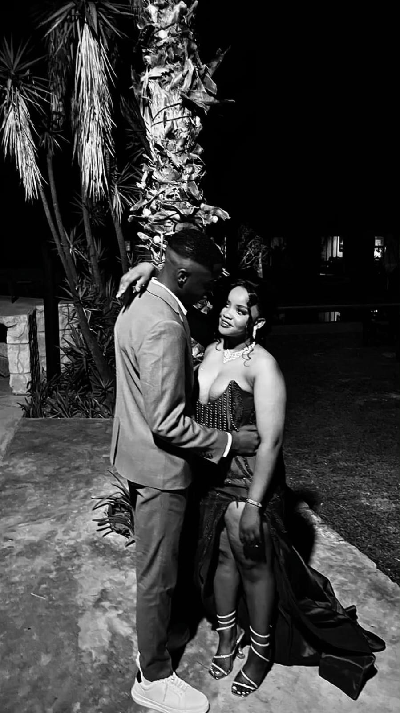

Puseletso Railo We spent nearly a year next to each other. We shared a lot of things, we laughed, we shared notes, we shared snacks and most importantly we shared that night. I was misunderstood by teachers and learners for who I was and eventually who I am, but you were always on the opposite side.
You never judged or made me feel unwanted. I remember a lot of things, I remember when you beat your chest and said "Mojela ke waka😂" and I would laugh and think "I once came to you that lets do this, and you said you're a lesbian 🥲" I was honestly confused by what you want but deep down you wanted a stable person and I wasn't near the quality of that. It seemed like I was looking down on you but I wasn't.

I didn't know much until that night when I was with you, we took pictures and there's this one where like I held your weist and we looked at each other in the eye. Something sparked that night and and I realized that you might actually be the one.
I look at this picture once a day seven times a week just to give me hope that I could continue and give out my best by working hard of what I actually want in life. When I look at that picture I feel like it was yesterday and everytime I drift from the last day we talked I feel the edge of texting you but I just can't cause you might be busy or maybe just cought up in life.
I remember I once said lets do this again around December and you said "you're not ready🥲". My heart was shattered into microscopic pieces. I tried to find a match only to find out it's impossible. Puseletso from what I have seen, you're strong, you care about what's actually around you and there is a phrase that says "A man gains value, and a woman losses value" but you're gaining it.
It's been a while since we met or maybe seen each other, it's been a while since we talked and I hope you're doing just great. I always imagine if we could restart again? Forget the ego, forget who hurt who cause it doesn't feel like a win for me. I wish we could go back to those little moments in class calling me "Mojela weh or Jelo",I still hear those like it was yesterday. I listened to the song Ubomi Abumaga by Msaki it says life continues, it hasn't stopped and I'm still trying get that in my head.
I'm shutting down everyone cause I feel like they aren't worthy.. You made me realise a lot of things and you opened my heart. I made this not because I want to be with you. I made this from my pure heart intensions cause I feel stuck and I just want to offload and tell you the best way as I can so that I can be feel better. I live in the past and it really it's not good honestly. I wish I could go back and change the outcome of what I'm feeling right now, but it's just impossible.
I also want to stand the thought of seeing you with someone else and I think this is the best way for me to express how I feel. When I listen to soul music you always cross my mind.. I would ask myself what are you doing or maybe how are you doing and that's when my mood changes.. and it's not good for me, it's unhealthy.
Puseletso I wish and want what's best for you.. I can't say you were a friend or just a classmate but you're special to me. You gave me a memory that I will never forget and I hope that you're doing well cause besides all of this I'm also proggressing well academically with distinctions. Yours Mojela ❤️